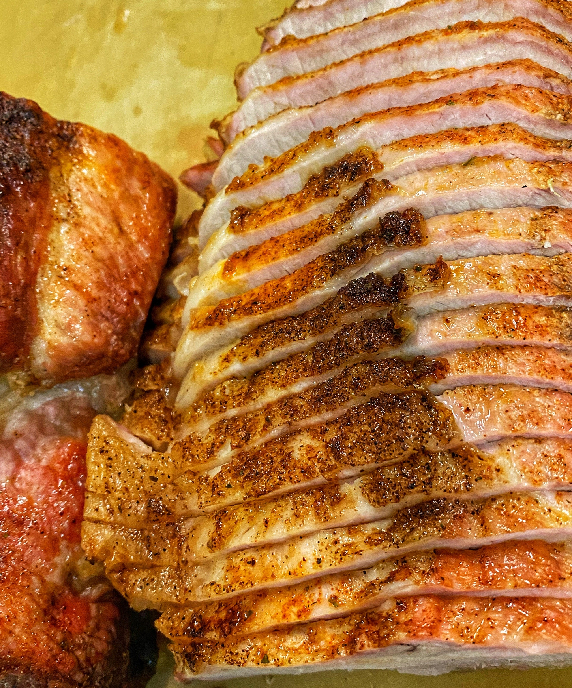

The Only Pork Roast Guide You'll Ever Need
Pork-Roast
Pork Loin
Method Guide

Pork gets a bad reputation mostly because people rush it. This method is about three things: salt it early, cook it slow, finish it loud. Do that and pork loin goes from “safe” food to centerpiece.
The Salt Step (Dry Brine)
Pre-salting (dry brining) does more than season the surface. It pulls a little moisture out, dissolves, and then is reabsorbed, changing how the meat behaves as it cooks.
- Seasons the meat from the inside
- Improves moisture retention
- Makes the pork more tender
- Reduces moisture loss during cooking
- Helps the surface dry for better browning
How to do it
- Salt the pork loin roast generously on all sides.
- Place on a rack or plate, uncovered, in the fridge for at least 12 hours and up to 24.
- If you only have an hour, salt anyway—some time is better than none.
The Cook Step (Low and Steady)
Pork doesn't like temperature shock. Starting screaming hot tightens muscle fibers and squeezes out moisture. Low, steady heat cooks evenly from edge to center.
Roast
- Heat the oven to 300–325°F.
- Roast the pork loin on a rack in a roasting pan.
- Cook until the internal temperature reaches 135–140°F.
- Don't rush, and don't constantly open the oven.
The Finish Step (High-Heat Crust)
Once the pork is cooked through, you earn your crust.
- Pull the roast out and increase the oven to 500°F.
- Let the pork rest briefly while the oven heats.
- Brush with glaze (see below) and return to the oven just long enough to brown and set the exterior.
Quick Pork Roast Glaze
- 3 tbsp honey
- 2 tbsp Dijon mustard
- 2 tbsp apple cider vinegar
- 1 tbsp soy sauce or Worcestershire
- Fresh cracked black pepper
Warm gently and brush over the roast during the final high-heat blast.
The Rest
- After the final sear, let the pork rest 15–20 minutes.
- This allows juices to redistribute so they stay in the meat, not on the cutting board.
- Slice thick and serve.
Summary: Salt early, cook low and steady, then finish hot with a simple glaze. It's not complicated, it's just good cooking—and once you get the feel for it, pork roast becomes one of the most forgiving centerpieces you can make.